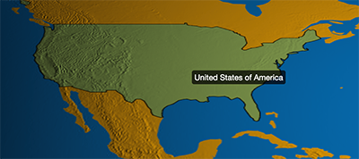
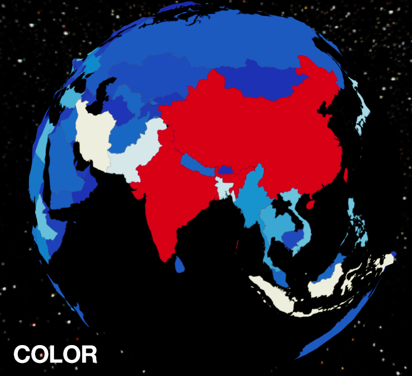
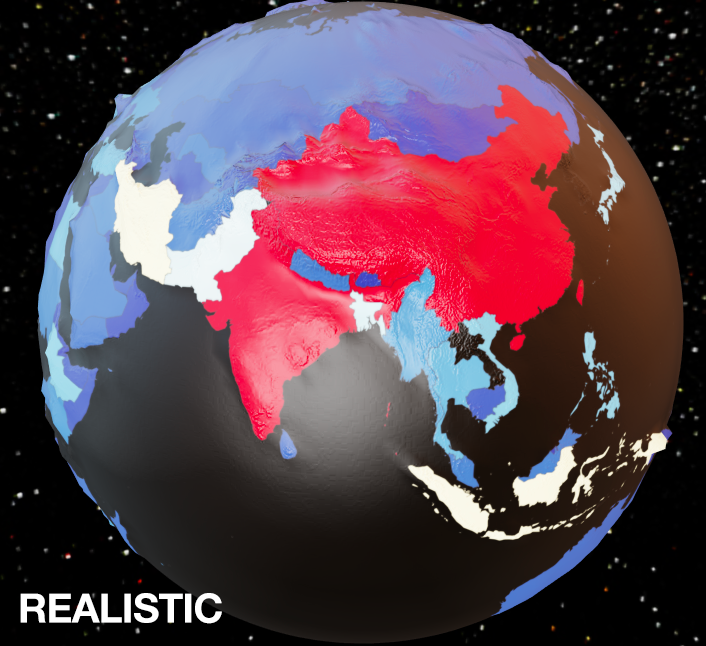
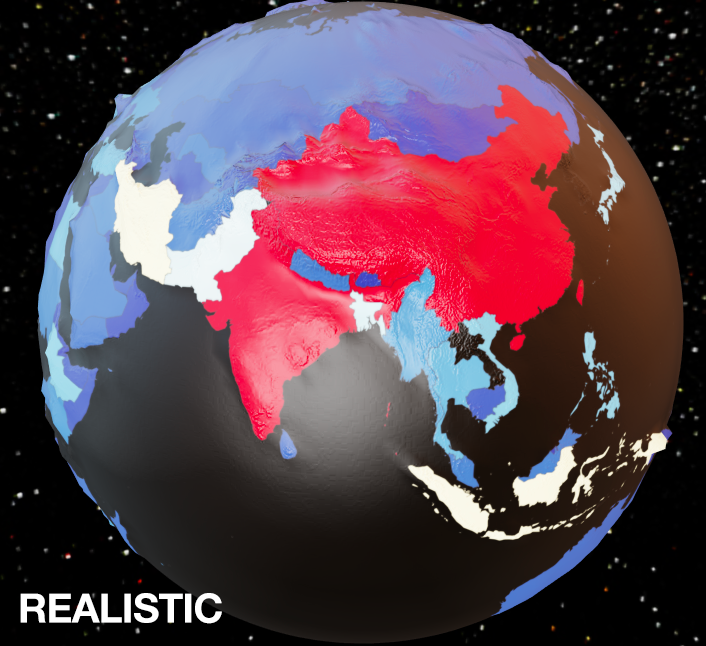

地球组件。组件提供了地球的绘制以及相应的坐标系，开发者可以在上面展示三维的散点图、气泡图、柱状图、飞线图。
是否显示地球组件。
地球的外半径。globeRadius 到 globeOuterRadius 之间这片区域会被用于展示三维柱状图，散点图等。
环境贴图。支持纯色、渐变色、全景贴图的 url。默认为 'auto'，在配置有 light.ambientCubemap.texture 的时候会使用该纹理作为环境贴图。否则则不显示环境贴图。
示例：
// 配置为全景贴图
environment: 'asset/starfield.jpg'
// 配置为纯黑色的背景
environment: '#000'
// 配置为垂直渐变的背景
environment: new echarts.graphic.LinearGradient(0, 0, 0, 1, [{
offset: 0, color: '#00aaff' // 天空颜色
}, {
offset: 0.7, color: '#998866' // 地面颜色
}, {
offset: 1, color: '#998866' // 地面颜色
}], false)
地球的纹理。支持图片路径的字符串，图片或者 Canvas 的对象。
也支持直接使用 echarts 的实例作为纹理，此时在地球上的鼠标动作会跟纹理上使用的 echarts 实例有联动。
示例：
// 使用地球的纹理图片
baseTexture: 'asset/earth.jpg'
// 使用 echarts 绘制世界地图的实例作为纹理
var canvas = document.createElement('canvas');
var mapChart = echarts.init(canvas, null, {
width: 4096, height: 2048
});
mapChart.setOption({
series : [
{
type: 'map',
map: 'world',
// 绘制完整尺寸的 echarts 实例
top: 0, left: 0,
right: 0, bottom: 0,
boundingCoords: [[-180, 90], [180, -90]]
}
]
});
...
baseTexture: mapChart
地球的高度纹理。高度纹理可以用于凹凸贴图表现地球表面的明暗细节。下面两张图分别是使用heightTexture和未使用heightTexuture的效果区别。

地球顶点的置换纹理，默认同 heightTexture。
相比于凹凸贴图，顶点的置换是根据纹理直接对顶点做位移。在 displaymentScale 大于 0 时有效。
地球顶点位移的大小。默认为 0， 也就是没位移，下面两图分别是设置不同的displacementScale的效果
地球顶点位移的质量。支持设置成 'low', 'medium', 'high', 'ultra' 。更高的质量能够表现更多的地表高度细节。下面截图分别是不同displacementQuality的效果
地球中三维图形的着色效果。echarts-gl 中支持下面三种着色方式：
'color'只显示颜色，不受光照等其它因素的影响。'lambert'通过经典的 lambert 着色表现光照带来的明暗。'realistic'真实感渲染，配合 light.ambientCubemap 和 postEffect 使用可以让展示的画面效果和质感有质的提升。ECharts GL 中使用了基于物理的渲染（PBR） 来表现真实感材质。
下面是不同着色效果的区别：

 

真实感材质相关的配置项，在 shading 为'realistic'时有效。
lambert 材质相关的配置项，在 shading 为'lambert'时有效。
color 材质相关的配置项，在 shading 为'color'时有效。
后处理特效的相关配置。后处理特效可以为画面添加高光、景深、环境光遮蔽（SSAO）、调色等效果。可以让整个画面更富有质感。
下面分别是关闭和开启 postEffect 的区别。
注意在开启 postEffect 的时候默认会开启 temporalSuperSampling 在画面静止后持续对画面增强，包括抗锯齿、景深、SSAO、阴影等。
分帧超采样。在开启 postEffect 后，WebGL 默认的 MSAA 会无法使用，所以我们需要自己解决锯齿的问题。
分帧超采样是用来解决锯齿问题的方法，它在画面静止后会持续分帧对一个像素多次抖动采样，从而达到抗锯齿的效果。而且在这个分帧采样的过程中，echarts-gl 也会对 postEffect 中一些需要采样保证效果的特效，例如 SSAO, 景深，以及阴影进行渐进增强。
下面是未开启和开启temporalSuperSampling的区别。
viewControl用于鼠标的旋转，缩放等视角控制。
地球表面层的配置，你可以使用该配置项加入云层，或者对 baseTexture 进行补充绘制出国家的轮廓等等。
组件所在的层。
zlevel用于 Canvas 分层，不同zlevel值的图形会放置在不同的 Canvas 中，Canvas 分层是一种常见的优化手段。我们可以把一些图形变化频繁（例如有动画）的组件设置成一个单独的zlevel。需要注意的是过多的 Canvas 会引起内存开销的增大，在手机端上需要谨慎使用以防崩溃。
zlevel 大的 Canvas 会放在 zlevel 小的 Canvas 的上面。
注: echarts-gl 中组件的层需要跟 echarts 中组件的层分开。同一个 zlevel 不能同时用于 WebGL 和 Canvas 的绘制。
组件的视图离容器左侧的距离。
left 的值可以是像 20 这样的具体像素值，可以是像 '20%' 这样相对于容器高宽的百分比，也可以是 'left', 'center', 'right'。
如果 left 的值为'left', 'center', 'right'，组件会根据相应的位置自动对齐。
组件的视图离容器上侧的距离。
top 的值可以是像 20 这样的具体像素值，可以是像 '20%' 这样相对于容器高宽的百分比，也可以是 'top', 'middle', 'bottom'。
如果 top 的值为'top', 'middle', 'bottom'，组件会根据相应的位置自动对齐。
组件的视图离容器右侧的距离。
right 的值可以是像 20 这样的具体像素值，可以是像 '20%' 这样相对于容器高宽的百分比。
默认自适应。
组件的视图离容器下侧的距离。
bottom 的值可以是像 20 这样的具体像素值，可以是像 '20%' 这样相对于容器高宽的百分比。
默认自适应。
组件的视图宽度。
组件的视图高度。